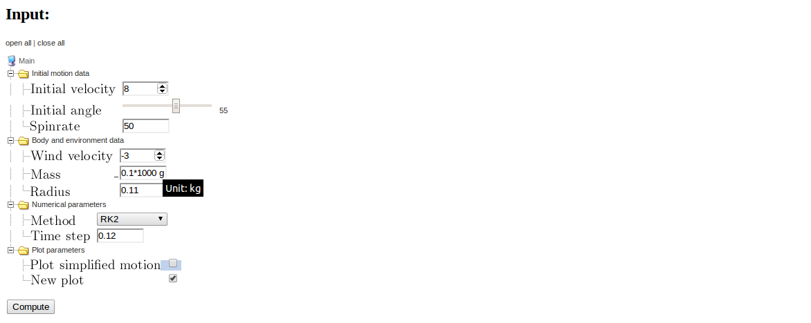
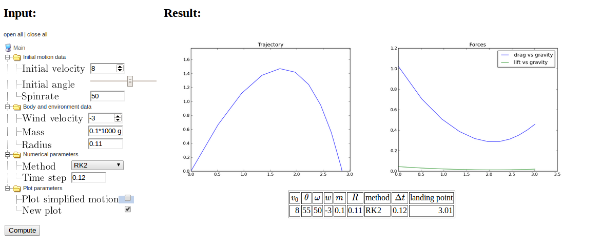

Working with a menu of input parameters
Parampool's main focus is on scientific applications with lots of
input data of different type, organized in a hierarchical tree fashion.
The various input parameters are defined in terms of a menu.
The menu can be defined as a nested list or through function
application programming interface (known as an API, and here
consisting of calls functionality in the parampool.menu package).
To exemplify the use of menus, we apply the
compute_motion_and_forces function (from
the section More input parameters and results):
def compute_motion_and_forces0(
initial_velocity=5.0,
initial_angle=45.0,
spinrate=50.0,
w=0.0,
m=0.1,
R=0.11,
method='RK4',
dt=None,
plot_simplified_motion=True,
new_plot=True
):
Let us organize 10 input parameters into four submenus. At the top level we need a submenu, usually called "Main menu" or named after the application. Each submenu is here specified with a logical name of each parameter and the corresponding variable names in the compute function:
- Main menu
- Initial motion data
- Initial velocity:
initial_velocity - Initial angle:
initial_angle - Spinrate:
spinrate - Body and environment data
- Wind velocity:
w - Mass:
m - Radius:
R - Numerical parameters
- Method:
method - Time step:
dt - Plot parameters
- Plot simplified motion:
plot_simplified_motion - New plot:
new_plot
A menu is a hierarchical tree structure with submenus and data items, where each data item describes an input parameter in the problem. The task now is to make a Python specification of the of submenus and data items in the menu tree.
Specify a menu as a list
The menu tree can be specified as a list of lists, strings, and dictionaries. Each list represents a submenu, each string the name of the submenu, and each dict is a data item. The menu must be return from some function, hereafter called the menu function. In our case, the menu function goes as follows:
def menu_definition_list():
"""Create and return menu defined through a nested list."""
menu = [
'Main', [
'Initial motion data', [
dict(name='Initial velocity', default=5.0),
dict(name='Initial angle', default=45,
widget='range', minmax=[0,90], range_step=1),
dict(name=r'Spinrate', default=50, widget='float',
unit='1/s'),
],
'Body and environment data', [
dict(name='Wind velocity', default=0.0,
help='Wind velocity in positive x direction.',
minmax=[-50, 50], number_step=0.5,
widget='float', str2type=float),
dict(name='Mass', default=0.1, unit='kg',
validate=lambda data_item, value: value > 0,
help='Mass of body.'),
dict(name='Radius', default=0.11, unit='m',
help='Radius of spherical body.'),
],
'Numerical parameters', [
dict(name='Method', default='RK4',
widget='select',
options=['RK4', 'RK2', 'ForwardEuler'],
help='Numerical solution method.'),
dict(name='Time step', default=None,
widget='textline', unit='s'),
],
'Plot parameters', [
dict(name='Plot simplified motion', default=True,
help='Plot motion without drag+lift forces.'),
dict(name='New plot', default=True,
help='Erase all old curves.'),
],
],
]
from parampool.menu.UI import listtree2Menu
menu = listtree2Menu(menu)
return menu
Actually, the menu function must return a parampool.menu.Menu object,
so after the definition of the menu tree as a list we must make the
shown conversion from a list to Menu object via the listtree2Menu
function.
Attributes in data items
Each data item has a name and preferably a default value, as in the case of "Initial velocity". More attributes can be added:
- 'widget' specifies the type of widget used in a graphical
user interface. Legal values are
integer,float,range(requires theminmaxattribute),integer_range(requires theminmaxattribute),textline,textarea(for larger multi-line texts),checkbox(for boolen variables),select(list of options),email,password,file(for a filename of a file to be uploaded,url,hidden(for an invisible field), andtel(for a phone number). If not given,widgetis based on the value ofstr2typeor the type of the default value. -
minmaxis a 2-list or 2-tuple with lower and upper bound in the interval of legal values of a number. - The
range_stepsattribute, valid whenwidgetisrange, specifies the steps in the slider used to select the number. Here we can select the "Initial angle" in unit steps between 0 and 90 degrees. -
unitspecifies a unit, e.g.,1/sorkg/m**3, or1/s. -
helpadds a help string to explain more about the parameter and how it can be set. -
number_stepspecifies the precision offloatorintegerwidgets ifminmaxis also specified (default 0.001), otherwise the precision is arbitrary. -
str2typeis a conversion function from a string (text given in a user interface) to the right type for the parameter. A value is automatically assigned ifwidgetis given, otherwise one applies the default value to find the rightstr2typefunction. This means that it is strictly not necessary to assign for the "Wind velocity" data item. With more complicated objects one can assign a user-given conversion function tostr2type(shown later). -
optionis a list of options for aselectwidget, here the type of numerical solution methods that can be chosen. -
validateholds a function that takes the value of the data item as argument and returnsTrueorFalsedepending on whether the value can be accepted or not. -
symbolcontains a mathematical LaTeX symbol that will be used in Flask or Django interfaces instead of the name of data item. -
widget_sizespecifies the size (width) of fields in graphical user interfaces. -
textlinemust be used for default values that areNone, because another value or the text "None" can be written in the field. In this case,str2typeis automatically set toevaland any valid Python expression is then essentially allowable, but wrong objects will give errors in the compute function.
The compute function
When working with menus, the compute function is allowed to take only
one argument called menu. This object is used to extract
input data. Basically, the value of any data item my parameter
in the menu is extracted by
variable = menu.get_value('my parameter')
In case multiple data items have the same name, enough of the submenu path must be given, e.g.,
variable = menu.get_value('My Submenu1/my parameter')
Our specific computing function is a wrapper for compute_motion_and_forces:
def compute_motion_and_forces_with_menu(menu):
initial_velocity = menu.get_value('Initial velocity')
initial_angle = menu.get_value('Initial angle')
spinrate = menu.get_value('Spinrate')
w = menu.get_value('Wind velocity')
m = menu.get_value('Mass')
R = menu.get_value('Radius')
method = menu.get_value('Method')
dt = menu.get_value('Time step')
plot_simplified_motion = menu.get_value('Plot simplified motion')
new_plot = menu.get_value('New plot')
return compute_motion_and_forces(
initial_velocity, initial_angle, spinrate, w,
m, R, method, dt, plot_simplified_motion,
new_plot)
The assumption is that the menu object provides enough input data for the compute function. If this assumption does not hold, one can simply make a class, store extra data as attributes in the class, and let the compute function be a method in the class.
Generating a user interface
With a menu function and a compute function at hand, it remains to make a new directory, copy the module(s) containing the menu function and compute function to this directory, and write a generate.py file with the content
from parampool.generator.flask import generate
from compute import compute_motion_and_forces_with_menu, \
menu_definition_list
generate(compute_motion_and_forces_with_menu,
menu_function=menu_definition_list,
MathJax=True)
The generate function will now use the information in the menu
(and not the arguments in the compute function!) to generate
a flexible user interface. Note that an Internet connection
is required. After running
Terminal> python generate.py
several Flask files and directories are generated (model.py, controller.py,
templates, static, and a simple clean-up script clean.sh).
The user interface is started by
Terminal> python controller.py
Open the URL http://127.0.0.1:5000 in a web broswer to see an interface
as the one in Figure 7.
Figure 7: Web interface in closed form.

Operating the user interface
The menu tree is mapped onto a visual structure often used for directory trees. Clicking on open all at the top of the user interface expands all submenus so that all parameters (data items) become visible. Figure 8 displays the result in the Opera browser. Note that in this type of user interface, the name of each data item is typeset in LaTeX and inserted as a picture.
Figure 8: Web interface in fully expanded form.

The following technical points must be mentioned.
- A plain float or integer value gives a
textlinewidget, while if aminmaxrange is specified, afloatorintegerwidget (HTML5 number field) is chosen. Choosingfloatorintegerexplicitly as widget may lead to different width of the widget in different browsers. - Data items whose widgets are specified as
floatorinteger, or where this is implied becausestr2typeisfloatorint, or the default value is afloatorintand theminmaxattribute is assign, are shown using the HTML5 input field called number. This is recogned by the small (and not so useful) arrows that can be used to adjust the number, but usually typing in the number manually is faster and more precise. An extra attribute,number_stepcontrols the stepping when clicking on the arrows and also the allowed precision of a typed number (same asnumber_step, which by default is 0.001). - When the widget is
range, an HTML5 range field is used, which is usually rendered as a slider in browsers. The slider gets by default 100 steps (can be changed or specified individually for any data item). - With the
selectwidget we get a pull-down menu with the different options. - Any data item whose default value is
TrueorFalsemaps directly to a checkbox for boolean parameters. - Any data item with
unitspecified maps to an ordinary text field, since input consists of a number with an optional text for the unit. That is, if we choose to setunit='m/s'for the "Initial velocity" data item, the input field will not the an HTML5 number field, but a standard HTML text field. - The names of the data items are typeset in LaTeX and shown as
PNG images. This means that data item names may contain
mathematical expressions:
Spinrate $\omega$for instance.
widget to be textline.
This is also the default widget type if you equip the number
with a unit or do not specify any widget, just a float or integer
default value.
We can try out the interface:
- Set "Initial velocity" to 8.
- Move the slider for "Initial angle" to 55.
- Add a positive "Wind velocity" of -3.
- Specify "Mass" as the text
0.1*1000 g(i.e., we use g rather than the default kg as unit, but the value is still 0.1 kg). - Choose
RK2for "Method". - Set "Time step" to 0.12.
- Uncheck the "Plot simplified motion" boolean value.
- Hold the mouse pointer over the "Wind velocity" field to see the help string. Then point the mouse to "Mass" input field and the specified unit pops up. A combination of help and unit information is showed if both are given in the data item definition.
Figure 9: Web interface with input parameters filled out.

Now, press the Compute button. Figure 10 shows the resulting response. You can now play around and click the checkbox for Plot simplified motion and the recompute to see the effects of wind against the motion, drag, and lift (which are substantial in this example).
Figure 10: Web interface with input and results.

Detection of wrong input
Text in a number field.
Write abc in the "Initial velocity" field and press the Compute button.
The error message "Please enter a number" pops up.
Failure of user-provided validate function.
Give a negative value for "Mass".
The "Mass" data item has a validation function provided by us.
A False value returned from this function gives rise to a
DataItemValueError shown in the browser. It reads here
Mass = -0.1: validate function <lambda> claims invalid value.
Failure of converting string to right type.
Write abc for "Radius". This is a text field so any
text is in principle valid, but parampool raises a TypeError
with the message could not apply str2type=<type 'float'> to value abc <type 'str'>.
Failure in the compute function.
Give a list [0.1, 0.2] for "Time step". Since the default is None,
which causes str2type=eval, any Python expression is accepted in
the interface, but the compute function raises a TypeError
because float(dt) fails when dt is a list. A remedy is to
write a tailored str2type function:
def convert_time_step(data_item, value):
# Value must be None or a float
if value == 'None':
return None
else:
try:
return float(value)
except TypeError:
raise TypeError('%s: could not convert "%s" to float' %
(data_item.name, value))
Setting str2type=convert_time_step for the "Time step" data item
gives an informative error message if the answer is not as expected:
None or a floating-point number.
Specifying a menu using an API
Instead of listing all the entries in the menu tree as strings, lists,
and dicts in a nested data structure, you can use the
Application Programming Interface (API) of the parampool.menu package.
The menu defined above is alternatively programmed like this using
the API:
def menu_definition_api():
"""Create and return menu using the parampool.menu API."""
from parampool.menu.Menu import Menu
menu = Menu()
# Go to a submenu, but create it if it does not exist
menu.submenu('Main menu')
menu.submenu('Initial motion data')
# Define data items for the current submenu
menu.add_data_item(
name='Initial velocity', default=5.0)
menu.add_data_item(
name='Initial angle', default=45,
widget='range', minmax=[0,90])
menu.add_data_item(
name='Spinrate', default=50, widget='float', unit='1/s')
# Move to (and create) another submenu, as in a file tree
menu.submenu('../Body and environment data')
# Add data items for the current submenu
menu.add_data_item(
name='Wind velocity', default=0.0,
help='Wind velocity in positive x direction.',
minmax=[-50, 50], number_step=0.5,
widget='float', str2type=float)
menu.add_data_item(
name='Mass', default=0.1, unit='kg',
validate=lambda data_item, value: value > 0,
help='Mass of body.')
menu.add_data_item(
name='Radius', default=0.11, unit='m',
help='Radius of spherical body.')
menu.submenu('../Numerical parameters')
menu.add_data_item(
name='Method', default='RK4',
widget='select',
options=['RK4', 'RK2', 'ForwardEuler'],
help='Numerical solution method.')
menu.add_data_item(
name='Time step', default=None,
widget='textline', unit='s', str2type=convert_time_step)
menu.submenu('../Plot parameters')
menu.add_data_item(
name='Plot simplified motion', default=True,
help='Plot motion without drag+lift forces.')
menu.add_data_item(
name='New plot', default=True,
help='Erase all old curves.')
menu.update()
return menu
The API is in many ways easier to use than the nested data structure with lists, strings, and dicts. The API resembles moving around in a file tree. The rules are simple:
-
menu.submenu(path)moves us to a submenupath, and creates it first if it does not exist. This is similar tocd pathin a file tree, ormkdir path; cd path, ifpathdoes not exist. - The name of a submenu,
path, follows the rule of file and directory names in a file tree: a slash is used as delimiter between submenus and data items. For example: -
/Main menu/Initial motion data/Initial velocityis the full path to the "Initial velocity" data item. - Standing in the "Initial motion data" submenu,
..is the parent submenu ("Main menu"), while../Numerical parametersis the correct path to the "Numerical parameters" submenu. That is, we can use relative and absolute paths as in a file tree. - A data item is appended to the current submenu by
calling
menu.add_data_item.
Specifying a menu using an alternative API
There is an another way of defining submenus as well: make a functions for defining each submenu.
def menu_definition_api_with_separate_submenus():
"""
Create and return a menu by calling up other functions
for defining the submenus. Also demonstrate customization
of menu properties and inserting default values from file
or the command line.
"""
from parampool.menu.Menu import Menu
menu = Menu()
menu.submenu('Main menu')
menu = motion_menu(menu)
menu.change_submenu('..')
menu = body_and_envir_menu(menu)
menu.change_submenu('..')
menu = numerics_menu(menu)
menu.change_submenu('..')
menu = plot_menu(menu)
menu.update() # finalize menu construction
from parampool.menu.UI import (
set_data_item_attribute,
set_defaults_from_file,
set_defaults_from_command_line,
set_defaults_in_model_file,
write_menufile,
)
# Change default values in the web GUI
import parampool.menu.DataItem
parampool.menu.DataItem.DataItem.defaults['minmax'] = [0, 100]
parampool.menu.DataItem.DataItem.defaults['range_steps'] = 500
# Can also change 'number_step' for the step in float fields
# and 'widget_size' for the width of widgets
# Let all widget sizes be 6, except for Time step
menu = set_data_item_attribute(menu, 'widget_size', 6)
menu.get('Time step').data['widget_size'] = 4
menu = set_defaults_from_file(menu, command_line_option='--menufile')
menu = set_defaults_from_command_line(menu)
flask_modelfile = 'model.py'
django_modelfile = os.path.join('motion_and_forces_with_menu', 'app',
'models.py')
if os.path.isfile(flask_modelfile):
set_defaults_in_model_file(flask_modelfile, menu)
elif os.path.isfile(django_modelfile):
set_defaults_in_model_file(django_modelfile, menu)
menufile = open('menu.dat', 'w')
menufile.write(write_menufile(menu))
menufile.close()
return menu
def motion_menu(menu, name='Initial motion data'):
menu.submenu(name)
menu.add_data_item(
name='Initial velocity', default=5.0, symbol='v_0',
unit='m/s', help='Initial velocity',
str2type=float, widget='float',
validate=lambda data_item, value: value > 0)
menu.add_data_item(
name='Initial angle', default=45, symbol=r'\theta',
widget='range', minmax=[0,90], str2type=float,
help='Initial angle',
validate=lambda data_item, value: 0 < value <= 90)
menu.add_data_item(
name='Spinrate', default=50, symbol=r'\omega',
widget='float', str2type=float, unit='1/s',
help='Spinrate')
return menu
def body_and_envir_menu(menu, name='Body and environment data'):
menu.submenu(name)
menu.add_data_item(
name='Wind velocity', default=0.0, symbol='w',
help='Wind velocity in positive x direction.', unit='m/s',
minmax=[-50, 50], number_step=0.5,
widget='float', str2type=float)
menu.add_data_item(
name='Mass', default=0.1, symbol='m',
help='Mass of body.', unit='kg',
widget='float', str2type=float,
validate=lambda data_item, value: value > 0)
menu.add_data_item(
name='Radius', default=0.11, symbol='R',
help='Radius of spherical body.', unit='m',
widget='float', str2type=float,
validate=lambda data_item, value: value > 0)
return menu
def numerics_menu(menu, name='Numerical parameters'):
menu.submenu(name)
menu.add_data_item(
name='Method', default='RK4',
widget='select',
options=['RK4', 'RK2', 'ForwardEuler'],
help='Numerical solution method.')
menu.add_data_item(
name='Time step', default=None, symbol=r'\Delta t',
widget='textline', unit='s', str2type=eval,
help='None: ca 500 steps, otherwise specify float.')
return menu
def plot_menu(menu, name='Plot parameters'):
menu.submenu(name)
menu.add_data_item(
name='Plot simplified motion', default=True,
help='Plot motion without drag and lift forces.')
menu.add_data_item(
name='New plot', default=True,
help='Erase all old curves.')
return menu
This application is used to illustrate three important additional features of Parampool:
- documentation of the application is in an external file
doc.html - the name of a parameter can be a mathematical symbol
- parameters can have multiple values for investigating many parameter sets at once
File with documentation of the application
We have in the section More input parameters and results seen that the doc string of
the compute function may contain a mathematical description of
the problem with rich typesetting (using DocOnce syntax).
It is also possible to make such a description in a separate
file. Any HTML file will work, and the filename is specified by
the doc argument to generate.
LaTeX symbol as parameter name
One can add a mathematical
LaTeX symbol for the parameter names (the symbol keyword argument).
This symbol can either be displayed as the parameter's complete name,
or the symbol can be added to the standard name of the parameter.
The choice is set by the latex_name keyword argument in the
generate call in generate.py:
from parampool.generator.flask import generate
from compute import compute_motion_and_forces_with_menu_loop, \
menu_definition_api_with_separate_submenus
generate(compute_motion_and_forces_with_menu_loop,
menu_function=menu_definition_api_with_separate_submenus,
MathJax=True, doc=open('doc.html', 'r').read(),
latex_name='symbol')
The values of latex_name can be 'symbol' (symbol only) or
'text, symbol' (ordinary name followed by a comma and the symbol).
Multiple input values for parameters
We can specify multiple values for parameters whose input fields are
pure text fields. For example, for the wind velocity (\( w \)) parameter
we can assign two values separated by the & character: 0 & -8.
Calling menu.get_values('Wind velocity') will then return
a list [0, -8] rather than one number. We can hence easily
make a loop over the multiple values for each parameter where we
use pure text as input. Our compute function looks in this case
like this:
def compute_motion_and_forces_with_menu_loop(menu):
html = ''
initial_angle = menu.get_value('Initial angle')
method = menu.get_value('Method')
new_plot = menu.get_value('New plot') # should be True here
plot_simplified_motion = menu.get_value('Plot simplified motion')
for initial_velocity in menu.get_values('Initial velocity'):
for spinrate in menu.get_values('Spinrate'):
for m in menu.get_values('Mass'):
for R in menu.get_values('Radius'):
for dt in menu.get_values('Time step'):
for w in menu.get_values('Wind velocity'):
html += compute_motion_and_forces(
initial_velocity, initial_angle,
spinrate, w, m, R, method, dt,
plot_simplified_motion, new_plot)
return html
Note that we accumulate the HTML code returned from the
compute_motion_and_forces function that runs the simulation
and returns the results as HTML code. Figure 11
mathematical description of the application, LaTeX symbols as parameter names, and two input values for two parameters, leading to \( 2\times 2=4 \) runs,
and hence four lines of plots. One realizes how easy it is to quickly
perform parameter studies by simply 1) writing the compute function with
loops and menu.get_values, 2) separating input values by & in the GUI.
Figure 11: Web interface with documentation, LaTeX symbols, and multiple input values.

2DO
- Lorenz demo as exercise, provide the compute function and graphics, perhaps also good demo in web4sciapps.
- units and text fields: Done
- menu list: no doc
- menu API: add doc in
doc.html, also show possibility to call - Check if multiple answers are correctly handled in DataItem,
make
enable_multiple_answers(*args)which turns all widgets into textline (or those given as arguments), make multiple loop parameters, can get them as list of dictsmenu.get_multiple_values(*args)(all if no argument, otherwise those params listed), let keys be either full path or shortest possible path, can iterate over this list, test in ball example by having a new function with the multiple loop calling upcompute_motion_and_forces_plotwithnew_plot=Truefirst time and false the next times. - Let
wbe function, widget=texline, str2type can be StringFunction. Can also invent a special syntax and translate to StringFunction or just make a function. - Let
wbe filename: upload a Python module with the w(t) function. - Problem: non-unique data item names cause trouble for the model class since just name is used as static variable...
- Show auto edit of the HTML code, e.g., removing Input: and Result:, this is easier than freezing the files and manually editing them. Reason: if you add new data itmes or submenus to the menu, it is convenient to be able to regenerate the whole setup.
from parampool.generator.flask.generate_template import \
run_doconce_on_text
doc = run_doconce_on_text(compute_function.__doc__)
Reading default values from command line or file
To be programmed:
Insert menu = set_defaults_from_file(menu) after calling
menu_function. Then call set_values_from_command_line(menu)
to override from command line. At the end of the controller.py script,
dump menu to file again with write_menufile(filename).
(The filename is given on the command line: --menufile filename.)
See the ...separate_submenus function - it has almost
all this functionality!
Menu with other data structures
Filename and text field with special str2type conversion. Allow list
syntax, but convert to array in str2type after list is eval'ed.